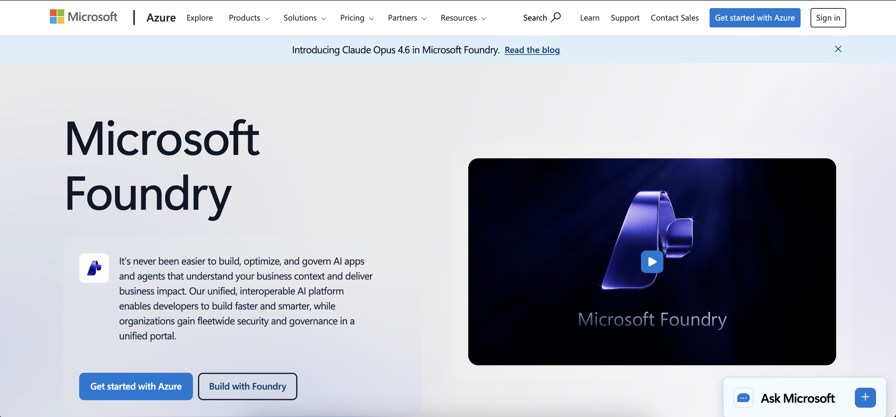

UX Research · Usability Testing · AI Platform
End-to-end usability testing and research driving strategic design improvements for Microsoft's AI developer platform — uncovering critical blockers in the agent-creation flow.
Microsoft Foundry is a publicly available platform. All information shared in this case study is based on publicly accessible features. Participant identities and internal data remain confidential and fully anonymized.

Introduction
Microsoft Foundry is a platform built for students, developers, and startup founders who want to create AI agents for their websites or apps. It helps users build smart assistants that work with their data and automate tasks — even if they're still learning or exploring AI.
As a User Experience Researcher on Microsoft's CoreAI team, I planned and led 8 moderated usability sessions testing the Knowledge, Data, and FoundryIQ features used in agent creation. I shaped the research questions, designed the study protocol, recruited participants, facilitated think-aloud sessions in the live platform, and synthesized findings into actionable design recommendations.
I focused on students with technical backgrounds and startup founders — people who are curious about AI and looking to leverage it for real projects, but may not be experts in the platform itself. My goal was to uncover critical blockers in the agent-creation flow and deliver insights that would directly improve adoption.
Research Questions
I shaped the research questions to investigate participants' mental models when interacting with Microsoft Foundry — where confusion begins, what makes it feel like a blocker, and what users actually want to build.
Method
I conducted moderated usability testing utilizing a within-subject design. This was the most appropriate method because the research questions are designed to investigate participants' mental models. With moderated sessions, I used the Think Aloud protocol, which helped me understand exactly which points of the user flow were most confusing.
I recruited participants who matched Foundry's target audience — students and early-career professionals with technical backgrounds who are curious about AI and looking to leverage it for projects.
Findings
Before diving into areas for improvement, it's important to highlight features where participants had a smooth, positive experience — signaling strong existing design decisions.
Areas of Improvement
I prioritized issues by severity (highest first) using Norman's severity scale. Each finding includes the interface problem, supporting data, and actionable recommendations.
Study at a Glance
Key metrics from the moderated usability sessions I conducted that shaped findings and recommendations for the Foundry team.
Next Steps
My study surfaced both immediate fixes and broader areas to explore in future research cycles.
Reflection
Conducting a usability study for a live Microsoft product was an incredible learning experience — from navigating stakeholder relationships to adapting on the fly when the guardrail issue caught the team off guard.
My biweekly check-ins with the Microsoft sponsor were invaluable for resolving technical issues in a timely manner and keeping the study on track. The combination of strong team collaboration and productive usability sessions meant that every test taught me something new.